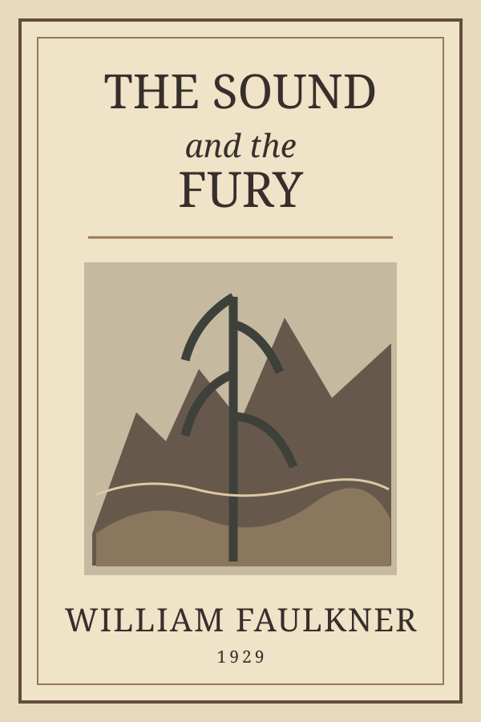

Ophelia’s Open Book · Read & Listen
Opening pages
Preparing the novel…

William Faulkner · 1929
In Mississippi, the troubled Compson family struggles against the losses of time, memory, and a vanishing way of life. Four distinct voices unfold a haunting portrait of love, pride, and the passage of generations.
Complete original novel · four sections · Public domain in the United States
Preparing the novel…